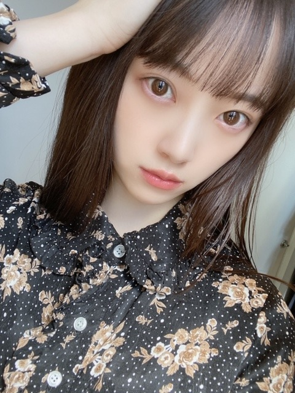
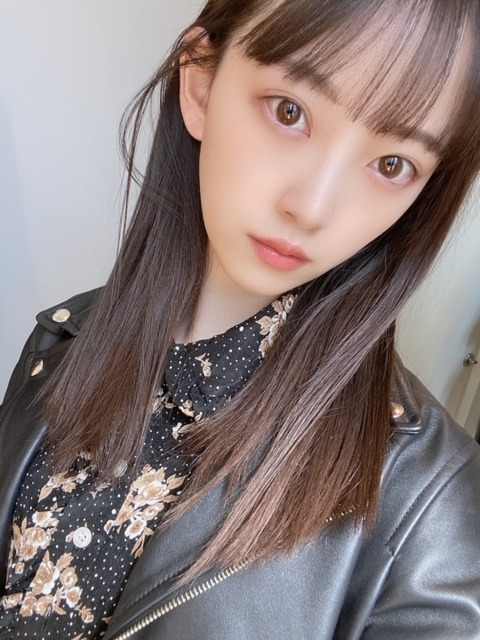

2020/0325Wedターコイズ色に染まる
switch liteでどうぶつの森はじめました
ずっとしてます☺︎
色はターコイズにしたのですが
身の回りにターコイズ色の物が多すぎて
何が何なのかパッと見わからんくなります。笑
あ、他のソフトも気になるので
おすすめがあったら是非教えてください❀
プレステのバイオ7も早くクリアしないとだ。

仕事の合間に母と待ち合わせをして
久しぶりにとんかつを食べました
母はとんかつが好きなので
母とご飯を食べに行くとなると
結構な確率でとんかつになります。笑
私はヒレカツが好きです
今日は19時〜premium music2020
に生出演します!
オープニングからご覧ください
お楽しみに~✿
そして23:45〜
文化放送 レコメン！
パーソナリティとしての出演は今日が最後です
ラジオって本当に楽しくて好きだから
別れが惜しいですが最後まで楽しみます...
よかったら1時まで聞いてください☺︎

黒髪がだんだんアッシュに色が抜けてきた~
髪質的に髪色抜けるのはやいのが悩みです...
次はどんな髪色に染めようかな?
やったことのない色にもしてみたいなぁ


最近は黒い服多めです
スカート丈もロングが好き
春やし明るい色や軽い素材の服も着たいなぁ
最近は楽しい撮影をたくさん
させていただいていて嬉しいです☺︎
また情報が解禁され次第、お知らせします!
でははは
2020/03/25 14:22
コメント(353)
こんばんは。
switch lite楽しんでますね。
睡眠はちゃんと取ってくださいね。
ターコイズカラー、ターコイズブルー好きです。
未央奈さんはティファニーブルーだらけなのかな。
写真が可愛すぎます。
最近の可愛いさの加速度的進化は、素晴らし過ぎて、幸せこの上ないです。ファン冥利につきますよ。
コレクション見ながら、その可愛いさに涙目になるほど癒され救われてます。ありがとうございます。
未央奈さんの自分磨きの努力のおかげです。
とんかつ羨ましいです。
我が家は父が特に好きでした。
自分もひれかつが好きです。
美味しいですよね。
premium music2020楽しみです。
輝いてくださいね。
レコメンには、ホント癒されました。
真夜中のカンフル剤です、元気の源です。
また生の未央奈さんの声を大切なその存在を感じる機会があると信じてますよ。
今夜は楽しんで欲しいです。
新しい髪色、沢山挑戦してみてくださいね。
様々な未央奈さんを感じたいです。
春らしく可愛い装い魅せて楽しんで欲しいです。
情報解禁楽しみにしてますよ。
楽しみをありがとうございます。
大好きだから待ってますね。
お身体にはお気をつけてくださいね。
頑張って行きましょう！
switch lite楽しんでますね。
睡眠はちゃんと取ってくださいね。
ターコイズカラー、ターコイズブルー好きです。
未央奈さんはティファニーブルーだらけなのかな。
写真が可愛すぎます。
最近の可愛いさの加速度的進化は、素晴らし過ぎて、幸せこの上ないです。ファン冥利につきますよ。
コレクション見ながら、その可愛いさに涙目になるほど癒され救われてます。ありがとうございます。
未央奈さんの自分磨きの努力のおかげです。
とんかつ羨ましいです。
我が家は父が特に好きでした。
自分もひれかつが好きです。
美味しいですよね。
premium music2020楽しみです。
輝いてくださいね。
レコメンには、ホント癒されました。
真夜中のカンフル剤です、元気の源です。
また生の未央奈さんの声を大切なその存在を感じる機会があると信じてますよ。
今夜は楽しんで欲しいです。
新しい髪色、沢山挑戦してみてくださいね。
様々な未央奈さんを感じたいです。
春らしく可愛い装い魅せて楽しんで欲しいです。
情報解禁楽しみにしてますよ。
楽しみをありがとうございます。
大好きだから待ってますね。
お身体にはお気をつけてくださいね。
頑張って行きましょう！
ターコイズって未央奈ちゃんにピッタリの石だね。
PS4持ってるなら、ファイナルファンタジー7リメイクこれから出るのおすすめ！やったことないかこそまっさらで楽しめると思うよ！何部作かになるけど！キャラクターやシナリオが皆魅力的、音楽は久石譲さんにも勝るとも劣らない植松伸夫さん、グラフィックは超一級でそのまま出てきそうなほどカッコいい、可愛い、きれいなキャラクターばかり！RPGもいいもんだよー、育てる楽しみとか本編からそれたとこに楽しみあったりする！ぜひぜひ体験版をまずはやってみてくださいな（1時間かからない程度な模様）。では応援してます！
ゼルダの伝説とスマブラは面白いよ！
レコメン!聴きたいような聴きたくないような。複雑です。
レコメン!聴きたいような聴きたくないような。複雑です。
未央奈さん、こんにちは☺️
たくさん食べるほうだと聞いてましたが
とんかつが好きとは驚きです。
実は私もとんかつは大好きです！
レコメンは今日で卒業ですね。
春は出会いと別れの季節なのですね。
始まりがあれば終わりがあるのが世の常ですが
正直、残念です・・・
でも、未央奈さんの新しい可能性を信じて
今日のレコメンを最後まで聴きたいと思います。
夜遅く帰宅して当たり前のようにラジオから
聴こえた未央奈さんのトークも聴き納めですね。
最後も未央奈さんらしい放送を楽しみにしてます。
必ず最初から聴きますよ☺️
たくさん食べるほうだと聞いてましたが
とんかつが好きとは驚きです。
実は私もとんかつは大好きです！
レコメンは今日で卒業ですね。
春は出会いと別れの季節なのですね。
始まりがあれば終わりがあるのが世の常ですが
正直、残念です・・・
でも、未央奈さんの新しい可能性を信じて
今日のレコメンを最後まで聴きたいと思います。
夜遅く帰宅して当たり前のようにラジオから
聴こえた未央奈さんのトークも聴き納めですね。
最後も未央奈さんらしい放送を楽しみにしてます。
必ず最初から聴きますよ☺️
ブログ更新ありがと！
TV絶対見るね！！
ターコイズのリングが離れへん笑笑
TV絶対見るね！！
ターコイズのリングが離れへん笑笑
堀未央奈❤こんばんは❗どうぶつの森のゲームしているんだね(^-^)v面白いかな？ゲーム好きなんだね(^_^)v今日は、生放送なんだね(^-^)v19時からじゃ仕事で見れないよ(T_T)未央奈は、頑張って来てね(^o^)v今日は、ラジオの仕事最後なんだね(T_T)悔い残らないように最後は、楽しんで来てね(^o^)v今日も未央奈可愛い(*^_^*)愛してる ♥❤体調に気を付けてね(*^_^*)
みおなちゃん更新ありがとう☺
どうぶつの森、人気ですね♪
髪色も良きですね～(*^^*)
Premium music、観るよ♪
写真集も楽しみにしてます☆
どうぶつの森、人気ですね♪
髪色も良きですね～(*^^*)
Premium music、観るよ♪
写真集も楽しみにしてます☆
ブログ更新ありがとう
私もSwitch light高校の合格祝いに買ってもらってどう森やってる〜
ちなみに北半球やけど未央奈ちゃんはどっちですか？
私もSwitch light高校の合格祝いに買ってもらってどう森やってる〜
ちなみに北半球やけど未央奈ちゃんはどっちですか？
更新ありがとう
ヒレカツ食べたーい
switch欲しくなってきた～
ソフト何も持って無いのでわからないですごめんなさい
髪の色オレンジとかどうですか？
ラジオ最後位聴きたいな～
写真はすべてかわいい～
癒やされます
ちょっと遅れたけど今からpremium music 2020見ます
ヒレカツ食べたーい
switch欲しくなってきた～
ソフト何も持って無いのでわからないですごめんなさい
髪の色オレンジとかどうですか？
ラジオ最後位聴きたいな～
写真はすべてかわいい～
癒やされます
ちょっと遅れたけど今からpremium music 2020見ます
トンカツはみそ派かな？それともソース派？
岐阜も結構みそかつ派は多いでね～。
みそかつ食べたくなった！
岐阜も結構みそかつ派は多いでね～。
みそかつ食べたくなった！
未央奈大好き！！
体調に気をつけて！
写真集買いまーーーーす！！
体調に気をつけて！
写真集買いまーーーーす！！
こんばんはお疲れさま☺
堀ちゃんもゲームに夢中なんや！
って俺は違うけどね(笑)
ターコイズ綺麗な色やね。
ブルーってグリーンなパステルカラー？
というイメージです☺
部屋も同色なら綺麗な色やね✨
ゲーム詳しくない方やからお薦め分からんくてごめんね。
気分転換に良さげやね☺
あっ、そうそうヒレカツ☺
なんか食べたくなりました(笑)
俺はロースカツも好きやよ✨
いつも書くけど、激辛など食わず嫌いあっても好き嫌いはないから、勿論お肉も大好きです☺
堀ちゃんならトンカツ作るなら、どんなサイドメニュー作るかな？(笑)
って食べる気満々でした(笑)
ごめんね☺
ただ堀ちゃんの手料理どんなかなって思ったから。
お母さんの味も教えてもらいや。
ではではまたね☺
体調にはホンマに気をつけてくださいね✨
ほなね、堀ちゃん☺
堀ちゃんもゲームに夢中なんや！
って俺は違うけどね(笑)
ターコイズ綺麗な色やね。
ブルーってグリーンなパステルカラー？
というイメージです☺
部屋も同色なら綺麗な色やね✨
ゲーム詳しくない方やからお薦め分からんくてごめんね。
気分転換に良さげやね☺
あっ、そうそうヒレカツ☺
なんか食べたくなりました(笑)
俺はロースカツも好きやよ✨
いつも書くけど、激辛など食わず嫌いあっても好き嫌いはないから、勿論お肉も大好きです☺
堀ちゃんならトンカツ作るなら、どんなサイドメニュー作るかな？(笑)
って食べる気満々でした(笑)
ごめんね☺
ただ堀ちゃんの手料理どんなかなって思ったから。
お母さんの味も教えてもらいや。
ではではまたね☺
体調にはホンマに気をつけてくださいね✨
ほなね、堀ちゃん☺
ブログ更新ありがとうございます！
CD発売しましたね！
そんな今日が私、お誕生日でハッピーであります。
未央奈ちゃん、ゲームやるんだね。
どう森は分かるけど、バイオとかやるのは知らなかったな。
もう直ぐバイオ3も出ます！
良かったら是非プレイしてみて下さい。
どう森、自分も買いました。
まだ、全然やれてなくて、マイホーム建てて終わってるので、今日は明日が休みなので少しやろうかと思ってます。
スローライフで頑張ります！
乃木坂メンバーも何人かやってるみたいだから話とか盛り上がれそうですね！
今日の歌番組、ちゃんと観てますよー
ラジオは眠くならなければ聴くね。
では！
★とし★
CD発売しましたね！
そんな今日が私、お誕生日でハッピーであります。
未央奈ちゃん、ゲームやるんだね。
どう森は分かるけど、バイオとかやるのは知らなかったな。
もう直ぐバイオ3も出ます！
良かったら是非プレイしてみて下さい。
どう森、自分も買いました。
まだ、全然やれてなくて、マイホーム建てて終わってるので、今日は明日が休みなので少しやろうかと思ってます。
スローライフで頑張ります！
乃木坂メンバーも何人かやってるみたいだから話とか盛り上がれそうですね！
今日の歌番組、ちゃんと観てますよー
ラジオは眠くならなければ聴くね。
では！
★とし★
レコメン最後寂しい
未央奈ブログ更新ありがとう！
ターコイズのリング！
ロマいかが乃木坂の曲で一番好きだな〜
レコメン！今日絶対聴く！
自分もSwitch lite欲しい、、、
これからも応援してるよ！ガンバレ！
体調に気をつけてね！
ターコイズのリング！
ロマいかが乃木坂の曲で一番好きだな〜
レコメン！今日絶対聴く！
自分もSwitch lite欲しい、、、
これからも応援してるよ！ガンバレ！
体調に気をつけてね！
未央奈ちゃん、お疲れ様です。
レコメン最後ですね、ハンカチ用意して聴きますね。
髪色今のままでもかわいいですよ。
またいろんな色に挑戦するのもありかな!!
レコメン最後ですね、ハンカチ用意して聴きますね。
髪色今のままでもかわいいですよ。
またいろんな色に挑戦するのもありかな!!
何が何なのかのくだりはおもしろく笑いましたw
ターコイズは10個くらいまでで！(まぁまぁ多い)
ゲームをやってるときは他の余計なことを忘れて楽しめたりするから良いよね！
バイオもやってるんだ！さすが。未央奈がバンバン銃とかでやっつけてるとこ想像したら何か面白いかもしれないw
一緒にやりたいわ～絶対楽しそう。
とんかつ！良い！ヒレカツ！分かる一緒！w
食べるときは、塩派？ソース派？
今の髪色好きだけどな～～確かに色抜けちゃうのはしょうがないよね。
乃木坂的にオーケーなら、ちょっと青っぽい黒？黒っぽい青？とかカッコよくて良さそう。
それか、がっつり茶髪って今まで無かったよね？！
新しいかもー。
春かー。こんな世の中にも早く春が来てほしいね。
握手会～。
今回もブログ更新ありがとー！
でわわっ
ターコイズは10個くらいまでで！(まぁまぁ多い)
ゲームをやってるときは他の余計なことを忘れて楽しめたりするから良いよね！
バイオもやってるんだ！さすが。未央奈がバンバン銃とかでやっつけてるとこ想像したら何か面白いかもしれないw
一緒にやりたいわ～絶対楽しそう。
とんかつ！良い！ヒレカツ！分かる一緒！w
食べるときは、塩派？ソース派？
今の髪色好きだけどな～～確かに色抜けちゃうのはしょうがないよね。
乃木坂的にオーケーなら、ちょっと青っぽい黒？黒っぽい青？とかカッコよくて良さそう。
それか、がっつり茶髪って今まで無かったよね？！
新しいかもー。
春かー。こんな世の中にも早く春が来てほしいね。
握手会～。
今回もブログ更新ありがとー！
でわわっ
ターコイズほんまに似合いすぎとる
俺もターコイズめっちゃ好きやから分かるわー
終わっちゃうのは悲しいけどラジオめっちゃ楽しみにしとるよーー
仕事終わりでコメント遅くなってしまったーー
これからもずっと応援しとるよーーー
俺もターコイズめっちゃ好きやから分かるわー
終わっちゃうのは悲しいけどラジオめっちゃ楽しみにしとるよーー
仕事終わりでコメント遅くなってしまったーー
これからもずっと応援しとるよーーー
[ターコイズ色に染まる]ありがとー❗️
黒服未央奈いいですね。
黒もいいけど、明るいくすんだ色も最強に似合います❗️
新しい髪色見てみたいです。
レインボーだけはチョット勘弁。
次のブログと写真集楽しみです❗️
黒服未央奈いいですね。
黒もいいけど、明るいくすんだ色も最強に似合います❗️
新しい髪色見てみたいです。
レインボーだけはチョット勘弁。
次のブログと写真集楽しみです❗️
更新待ってました〜⸜( ॑꒳ ॑ )⸝⸜( ॑꒳ ॑ )⸝
今、Premium Music
見てるよ〜未央奈ちゃんも
さっき見たよ︎☺︎︎☺︎︎☺︎
ターコイズっていい色だよね
私もSwitch lightターコイズだよ笑
今日でレコメン！未央奈ちゃん最後か…
絶対聞くからね⸜( ॑꒳ ॑ )⸝でははは
次の更新も待ってます
今、Premium Music
見てるよ〜未央奈ちゃんも
さっき見たよ︎☺︎︎☺︎︎☺︎
ターコイズっていい色だよね
私もSwitch lightターコイズだよ笑
今日でレコメン！未央奈ちゃん最後か…
絶対聞くからね⸜( ॑꒳ ॑ )⸝でははは
次の更新も待ってます
バイオやってるんやったら
新作のバイオRe3オススメ。女性主人公でジル・バレンタインですよ。
後はメタルギアシリーズ、
ホラーならサイコブレイク、アウトラストとか？
新作のバイオRe3オススメ。女性主人公でジル・バレンタインですよ。
後はメタルギアシリーズ、
ホラーならサイコブレイク、アウトラストとか？
こばわ。
黒髪＋パッチリ目が好きなんだろうね。
いつになく美しか。
会社の帰りGEOのどうぶつの森コーナーの前で佇んで来た。
興味津々だけどプレステ2からゲームやっとらんで。
堀ちゃんがブログ上で面白さ伝えてくれたら始めるかも。
黒髪＋パッチリ目が好きなんだろうね。
いつになく美しか。
会社の帰りGEOのどうぶつの森コーナーの前で佇んで来た。
興味津々だけどプレステ2からゲームやっとらんで。
堀ちゃんがブログ上で面白さ伝えてくれたら始めるかも。
とんかつ美味しいよね。ヒレカツもいいよね。
私も髪を黒くするんですけど、色が落ちるのも早い(T_T)
私も髪を黒くするんですけど、色が落ちるのも早い(T_T)
未央奈ちゃんの今の髪型すち
そう言えば最近、ヒレカツ食べてないですね。
食べたい！
食べたい！
今週末は外に出られないから、家に籠もるのにゲーム機は欠かせないかも知れないですね。
今夜のレコメン！、心して聴きます！
先ずはpremium music2020を楽しんでくださいね！☆
今夜のレコメン！、心して聴きます！
先ずはpremium music2020を楽しんでくださいね！☆
応援しとるよー^ ^
頑張れ みおにゃ
頑張れ みおにゃ
やほう♡
どうぶつの森は癒されますね♪
ターコイズ色とっても魅惑的です！
青でなく緑でもない微妙さが素敵☆
写真のコーデとってもシックですね！
コーデで大人にも若くも見えますよ✨
髪型や型色でもイメージ変化します！
みおちゃんは虹の様な存在感ですね✴
トンカツもとっても魅力的ですよね！
ヒレカツは幾らでも食べれますよ～笑
Premium Musicリアタイしてます！
最近の撮影分もとっても楽しみです✌
レコメン！も最後まで聴き届けます♡☺
どうぶつの森は癒されますね♪
ターコイズ色とっても魅惑的です！
青でなく緑でもない微妙さが素敵☆
写真のコーデとってもシックですね！
コーデで大人にも若くも見えますよ✨
髪型や型色でもイメージ変化します！
みおちゃんは虹の様な存在感ですね✴
トンカツもとっても魅力的ですよね！
ヒレカツは幾らでも食べれますよ～笑
Premium Musicリアタイしてます！
最近の撮影分もとっても楽しみです✌
レコメン！も最後まで聴き届けます♡☺
堀ちゃんこんばんは！なかじーです！
周りもどうぶつの森始めたので自分も始めようか迷い中です…。でも今年は受験だからやらないかもしれないです笑
琴子のSHOWROOM観ながらPremium Music観ます!!
黒のアウターはレザーですかね？かっこいいし、似合ってます!!
また書きますね。では。
周りもどうぶつの森始めたので自分も始めようか迷い中です…。でも今年は受験だからやらないかもしれないです笑
琴子のSHOWROOM観ながらPremium Music観ます!!
黒のアウターはレザーですかね？かっこいいし、似合ってます!!
また書きますね。では。
好き。
みおなちゃんほんとにかわいい！！❤髪色一緒にした！
未央奈ちゃん
TV観たよー！
今日もかわいい
TV観たよー！
今日もかわいい
未央奈ちゃんブログ更新ありがとう！
レコメン聴くよ！
またコメントします！
レコメン聴くよ！
またコメントします！
今日可愛かったです！！♥
いっぱい映って嬉しかったです！
あの髪型好きですほんとに！♥
同性としてほんとに憧れます！
もし私が可愛くて乃木坂46に入れたら堀ちゃんと一緒に活動してみたいな、、密かな夢です☁
いっぱい映って嬉しかったです！
あの髪型好きですほんとに！♥
同性としてほんとに憧れます！
もし私が可愛くて乃木坂46に入れたら堀ちゃんと一緒に活動してみたいな、、密かな夢です☁
みおな、こんばんは。
今日の写真、なんか大人っぽいです。
こんなみおな、好きです。
トンカツは、もちろん味噌カツですよね。
岐阜県人も、準名古屋人だよ。そういう僕も岐阜県人です。
今日の写真、なんか大人っぽいです。
こんなみおな、好きです。
トンカツは、もちろん味噌カツですよね。
岐阜県人も、準名古屋人だよ。そういう僕も岐阜県人です。
こんばんはお疲れさま☺
再びコメントしたよ✨
ニュース見ていて今東京大変な難局がありうるかも知れない。
とニュースを見ていて思ったよ。
堀ちゃん出来るだけでも気をつけてね。
乃木坂メンバーもスタッフさんもみんな気をつけてくださいね。
なんかニュース見ていて書かねばと思い✨
ごめんね。
ではではまたね。
ほなね、堀ちゃん☺
再びコメントしたよ✨
ニュース見ていて今東京大変な難局がありうるかも知れない。
とニュースを見ていて思ったよ。
堀ちゃん出来るだけでも気をつけてね。
乃木坂メンバーもスタッフさんもみんな気をつけてくださいね。
なんかニュース見ていて書かねばと思い✨
ごめんね。
ではではまたね。
ほなね、堀ちゃん☺
俺もどう森やってるよー！
未央奈も意外とゲームするんだね
可愛いな〜癒しです。
レコメンも聴きますね！
ではは
未央奈も意外とゲームするんだね
可愛いな〜癒しです。
レコメンも聴きますね！
ではは
レコメン噛み締めて聴くね。本当にのぎののからずっと聴いてて、レコメンはありがたいことにいっぱい読まれるようになって、堀ちゃんと思い出ができたから嬉しかったなぁ、、もう私はレコメンが無くなったらみおちゃんとちゃんと話せるのは握手会しかないから、頑張ってバイトして、CDいっぱいかうね！みおちゃんが大好きです。どうぶつの森スイッチターコイズ色買ったんだね！私はきいろ買った！！！今日の音楽番組録画してあるからみるね！！ずっと永遠の推しメンです！
ももんが
ももんが
ブログ更新ありがとう⸜❤︎⸝
写真集絶対買います！
大好きだよ⸜❤︎⸝
写真集絶対買います！
大好きだよ⸜❤︎⸝
「脳トレ」
「マリオカートDX」
「大乱闘スマッシュブラザーズスペシャル」
「マリオカートDX」
「大乱闘スマッシュブラザーズスペシャル」
あ‼(*_*)どんな髪色が良いと思うかは、、
【亜麻色の髪】の乙女
亜麻色の 長い髪を 風がやさしく包む～♪
て、事で視ました。あすかちゃんの後ろとかに写ってましたね。きぃちゃんも元気そうで良かった。
【亜麻色の髪】の乙女
亜麻色の 長い髪を 風がやさしく包む～♪
て、事で視ました。あすかちゃんの後ろとかに写ってましたね。きぃちゃんも元気そうで良かった。
やっぱり未央奈ちゃんのダンスが好きです！
今晩で水曜日の楽しみが終わりますか‼(。>д<) これからはANNに頻繁にゲストでお願いします。(｀◇´)ゞ 堀ちゃんのラジオ番組が新たに出来ます様に(⌒∇⌒)ノ"
未央奈さん、ブログ更新ありがとうございます。今日もいつもに増してとてもきれいでかわいいですね。新制服とても似合っています。本日発売の「しあわせの保護色」のＣＤを３枚買いました。残念ながら未央奈さんの生写真は出ませんでした… なのでもう少し買おうと思っています。 今日も未央奈さんの笑顔に癒されました。またコメントしますね。
大混乱ですね（笑）
最近のゲームソフトは
3DSとかPS3とかそれ以前とかの
移植やリメイクが多いです。
そんなこんなで縁がある時（主に金銭面。笑）
しか購入しません。
購入も評価を調べて、
良くない点が何かを把握してからにします。
楽しみたいので（笑）
テレビつけたらご出演してました～
レコメンか～楽しみましょう♪
あ、Switchは現在、
●GODWARS 日本神話大戦
●妖怪ウォッチ１
●二ノ国
が入ってます。
更なる縁が欲しいですね（笑）
出た！とんかつ！（笑）
相変わらずですね（笑）
カツ丼もいいな～（笑）
髪はターコイズにしないの？（笑）
最近のゲームソフトは
3DSとかPS3とかそれ以前とかの
移植やリメイクが多いです。
そんなこんなで縁がある時（主に金銭面。笑）
しか購入しません。
購入も評価を調べて、
良くない点が何かを把握してからにします。
楽しみたいので（笑）
テレビつけたらご出演してました～
レコメンか～楽しみましょう♪
あ、Switchは現在、
●GODWARS 日本神話大戦
●妖怪ウォッチ１
●二ノ国
が入ってます。
更なる縁が欲しいですね（笑）
出た！とんかつ！（笑）
相変わらずですね（笑）
カツ丼もいいな～（笑）
髪はターコイズにしないの？（笑）
未央奈ブログ更新お疲れ様〜
俺もSwitchでどうぶつの森してるよ！
あれ面白いよね〜笑笑草むしりばっかしてる
オススメのゲームだけど、Switchでいうと、「スマブラ」、「ポケモンソード&シールド」、「マリオカート」、「マリオパーティ」、「フォートナイト」だよ！
気になったのあったら是非チェックしてみてね！
P.S.気になって実際に購入したらブログで教えてね！
俺もSwitchでどうぶつの森してるよ！
あれ面白いよね〜笑笑草むしりばっかしてる
オススメのゲームだけど、Switchでいうと、「スマブラ」、「ポケモンソード&シールド」、「マリオカート」、「マリオパーティ」、「フォートナイト」だよ！
気になったのあったら是非チェックしてみてね！
P.S.気になって実際に購入したらブログで教えてね！
こんばんは。セブンだよ(ฅ'ω'ฅ)♪
今日も1日お疲れさまです
お写真が可愛すぎるのよ！
めっちゃ好き
ドタイプです♡
目がすごく大きくて綺麗だし
前髪の長さも完璧だし
美白の人は黒髪が1番似合うと思ってるので
暗い色最高に合ってるし
服もスタイリッシュでカッコいいし
完璧すぎる好きすぎる！
レコメン！ラストですね
ラストだけどいつも通りの楽しいラジオを期待してます
のりほりコンビが解散するのは辛いよー(T ^ T)
ではレコメン楽しんでねd(@^∇ﾟ)/ﾌｧｲﾄｯ♪
o(ﾟ▽＾)ﾉｼまたねぃ♪
今日も1日お疲れさまです
お写真が可愛すぎるのよ！
めっちゃ好き
ドタイプです♡
目がすごく大きくて綺麗だし
前髪の長さも完璧だし
美白の人は黒髪が1番似合うと思ってるので
暗い色最高に合ってるし
服もスタイリッシュでカッコいいし
完璧すぎる好きすぎる！
レコメン！ラストですね
ラストだけどいつも通りの楽しいラジオを期待してます
のりほりコンビが解散するのは辛いよー(T ^ T)
ではレコメン楽しんでねd(@^∇ﾟ)/ﾌｧｲﾄｯ♪
o(ﾟ▽＾)ﾉｼまたねぃ♪
レコメン最後ですね
とても寂しいです
レコメンを聞き始めたのはみおなさんの声が聴きたかったから聞き始めました
とても楽しい時間をありがとうございました
おつかれさまでした
少し寂しいですが、更なる未央奈さんのご活躍期待しております
とても寂しいです
レコメンを聞き始めたのはみおなさんの声が聴きたかったから聞き始めました
とても楽しい時間をありがとうございました
おつかれさまでした
少し寂しいですが、更なる未央奈さんのご活躍期待しております


お家にいる時間が長いと
ゲームやっちゃうよね〜！
堀ちゃんも乃木フェスやるのかな？
4チャンしっかり見ます！！
インフルとしあわせのメドレー！？
楽しみにしてます！！
レコメンも今日最後かぁ！！！
のりさんと楽しんでね〜！！！
最後の、のりほり！楽しみにしてます！
では！
コロナに気をつけて！
次回の更新も楽しみにしてます！
おやすみおな〜！